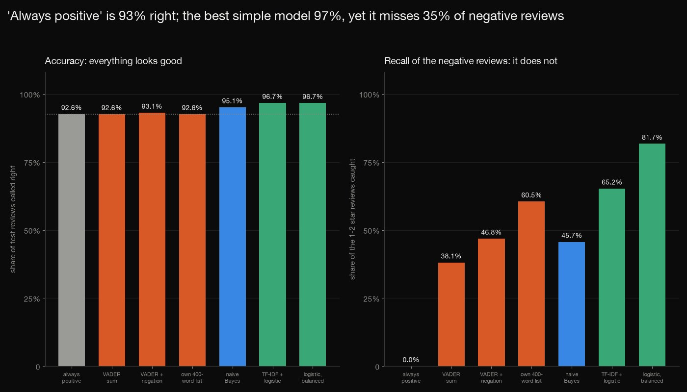
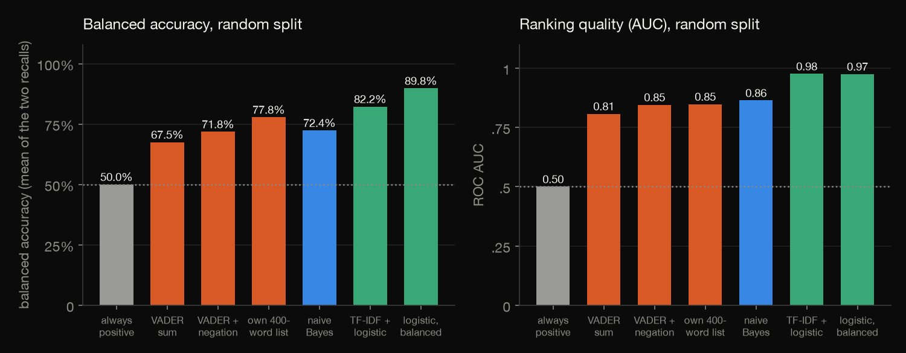
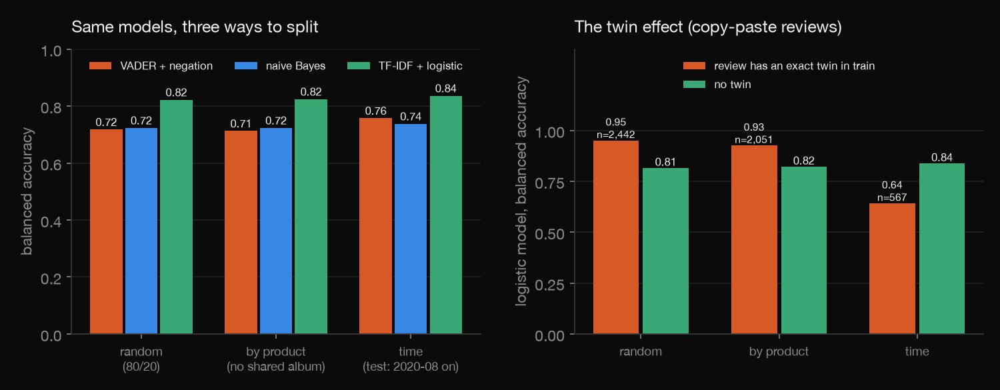
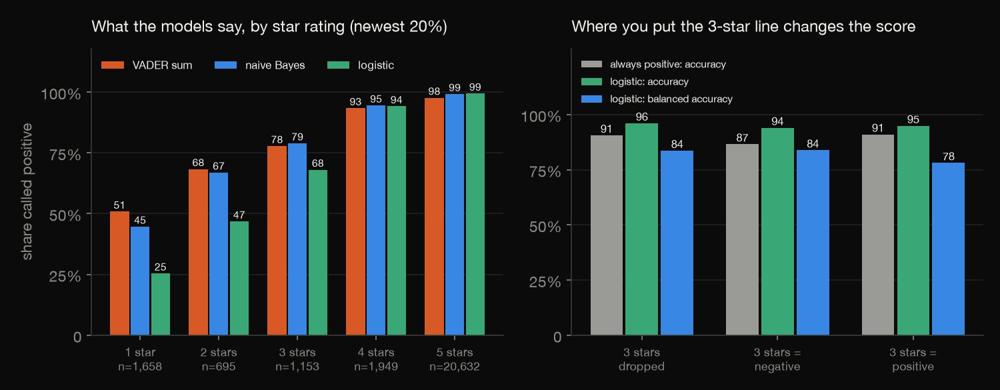
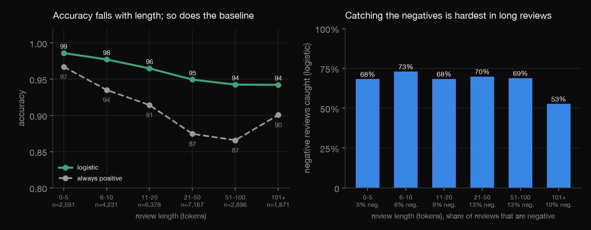
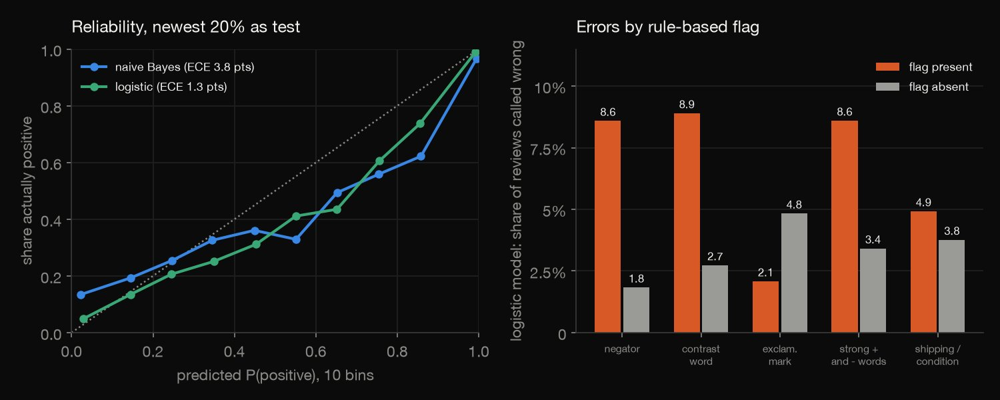

Python · NLP · 2026-10
How Far Can Simple Methods Read Reviews?
On 130,434 Amazon music reviews 'always positive' is 93% accurate; naive Bayes reaches 95%, TF-IDF + logistic 97%, yet it misses 35% of negative reviews. Splits barely matter; twins, 3-star labels and length do.

One category (Amazon Digital_Music, 130,434 reviews); labels are star ratings (4-5 positive, 1-2 negative, 3 dropped), not human judgements of the text, so 'error' means 'disagrees with the stars'. No neural model, no neutral class, no sarcasm detector. Data: Amazon Reviews 2023 (McAuley Lab; the dataset card states no licence and offers it for research, so only aggregates are published, never review text) and the VADER lexicon (MIT).
01 — The problem
A shop wants to know, from thousands of reviews, which customers are unhappy. How far do a word list, naive Bayes and a TF-IDF logistic regression get on real star-rated reviews, and how much of the score is real once the class imbalance, the split, the duplicates and the meaning of 3 stars are taken into account?
The task follows DataCamp's "Sentiment Analysis on Customer Reviews" (classify thousands of reviews as positive or negative). The data is the 130,434 reviews of Amazon's Digital_Music category in the McAuley Lab's Amazon Reviews 2023, rated 1 to 5, 77% of them 5 stars.
02 — What I built
Simple methods, tested hard:
- The ladder: "always positive", the VADER lexicon (with and without a negation flip), a 400-word list from the training half, naive Bayes by hand, and TF-IDF + logistic regression.
- Three splits: random, by product, and the newest 20% as the test, with a count of exact twins, shared reviewers, and Amazon's own "Five Stars" titles.
- The label: 3 stars dropped, negative or positive; accuracy against balanced accuracy and the F1 of the negative class.
- The errors: by length, negation, contrast words, shipping talk and sarcasm phrases; calibration of the probabilities.
- Check:
check.pyrecounts 1,029 numbers in plain Python: the tokeniser, the lexicon and naive Bayes fits by hand, the metrics, and the logistic fit by its optimality conditions.
03 — How it was built
- 01
Download the reviews and the lexicon
The Digital_Music file of Amazon Reviews 2023 (79 MB; no licence stated, offered for research, so only aggregates are published) and the VADER lexicon (MIT), fetched with checksums and never committed. Nothing is scraped.
"Digital_Music.jsonl": "https://huggingface.co/datasets/McAuley-Lab/Amazon-Reviews-2023/resolve/main/raw/review_categories/Digital_Music.jsonl", - 02
Tokenise, and blank the title that gives the label away
Lower-case,
<br>removed, runs of letters and digits with an optional apostrophe: 8,323,116 tokens and 132,626 word types. Amazon's own titles ("Five Stars", "One Star", 15.9% of reviews) are blanked.TOK = re.compile(r"[a-z0-9]+(?:'[a-z]+)?") - 03
Split three ways, with no seed
A CRC of the row number (random 80/20), a CRC of the product (so no album is in both halves), and the newest 20% by time as the test (from 2020-08-29). Every split is the same on every run.
test = {"random": ridx == 0, "product": pidx == 0, "time": rank >= int(0.8 * N)} - 04
Naive Bayes by hand
Multinomial naive Bayes with Laplace smoothing: the log-ratio of each word's smoothed frequency in positive and negative training reviews, summed over a review plus the log prior ratio. The same fit is written twice, on count matrices in
analyze.pyand with dictionaries incheck.py.w = (np.log(cp + 1) - np.log(cp.sum() + V)) - (np.log(cn + 1) - np.log(cn.sum() + V)) - 05
Check the library fit by its optimality conditions
The logistic regression cannot be hand-written, so
check.pyrebuilds the TF-IDF matrix by hand, reproduces every stored test probability from the stored coefficients, and checks that the gradient of the penalised log-loss is zero on the training set, to the solver's tolerance. 1,029 numbers are recomputed in all.x = vec(tok[i]); e = sigmoid(b + sum(W[w] * v for w, v in x.items())) - y[i]; gb += e
04 — Results
The baseline is 92.6%, and word counting beats it by little. Of the reviews with a clear label (1, 2, 4 or 5 stars), 92.5% are positive, so "always positive" is 92.6% right. On a random 80/20 split, Acc. is accuracy, Bal. the balanced accuracy (the mean of the recall of positive and of negative reviews) and Caught the share of the negative reviews found. The VADER sum is no more accurate than the baseline although it finds a lexicon word in 96% of reviews; the negation flip adds 4.3 points of balanced accuracy; logistic regression on TF-IDF reaches 96.7% yet misses 35% of the negative reviews, and balancing the class weights buys 16 points of Caught for 0.03 points of accuracy.
| Model | Acc. | Bal. | Caught |
|---|---|---|---|
| Always positive | 92.6% | 50% | 0% |
| VADER sum | 92.6% | 67% | 38% |
| VADER + negation | 93.1% | 72% | 47% |
| 400-word list | 92.6% | 78% | 60% |
| Naive Bayes | 95.1% | 72% | 46% |
| Logistic | 96.7% | 82% | 65% |
| Logistic, balanced | 96.7% | 90% | 82% |

The split barely matters here, the time split moves the baseline. By product (no album in both halves) is as good as random; 56% of the random split's test reviews are of a product that is also in training, and it makes 0.02 points of accuracy of difference. On the newest 20% (from 2020-08-29) reviews are more often negative (9.4% against 7.0% in training), so the baseline falls to 90.6% and accuracy with it, while balanced accuracy does not fall.
| Split | Baseline | Acc. | Bal. |
|---|---|---|---|
| Random | 92.6% | 96.7% | 0.822 |
| By product | 92.5% | 96.7% | 0.824 |
| Newest 20% | 90.6% | 96.1% | 0.836 |
Twins inflate the score, mostly the score of the reviews that have one. 9.9% of the random split's test reviews have a word-for-word twin in training, but 83% of the twins are shorter than 20 tokens: short reviews that match by chance more than copy-paste. Bal. twin and Bal. rest are the logistic model's balanced accuracy on the two groups (the time-split twins hold few negatives, so its figure is noisy). 29% of random-split test reviews are also by a reviewer who is in training. Amazon's own titles ("Five Stars", ...) are on 15.9% of reviews and spell out the label; they are blanked here. Naive Bayes on the text alone has balanced accuracy 0.657, with the reviewer's titles 0.724, and with Amazon's titles kept too 0.736.
| Split | Twins | Bal. twin | Bal. rest |
|---|---|---|---|
| Random | 9.9% | 0.95 | 0.81 |
| By product | 8.4% | 0.93 | 0.82 |
| Newest 20% | 2.3% | 0.64 | 0.84 |

What a star rating means as a label. The logistic model calls 68% of 3-star reviews positive (naive Bayes 79%, VADER 78%), and also 47% of 2-star and 25% of 1-star reviews. The table shows what happens to the score when the 3-star reviews are dropped, counted as negative or counted as positive (Neg. is the share of negatives, Bal. the logistic balanced accuracy): the baseline moves by 4.4 points between the last two, so accuracy cannot be compared across label definitions.
| 3 stars | Neg. | Baseline | Bal. |
|---|---|---|---|
| dropped | 9.4% | 90.6% | 0.836 |
| negative | 13.4% | 86.6% | 0.838 |
| positive | 9.0% | 91.0% | 0.781 |

Length. Accuracy falls from 98.6% for the shortest reviews to 94.2% for the longest, but so does the baseline, because longer reviews are more often negative; the share of negatives caught is 68% to 73% up to 100 tokens and drops to 53% above (newest 20%).
| Tokens | Baseline | Acc. | Caught |
|---|---|---|---|
| 0-5 | 97% | 98.6% | 68% |
| 6-10 | 94% | 97.7% | 73% |
| 11-20 | 91% | 96.5% | 68% |
| 21-50 | 87% | 94.9% | 70% |
| 51-100 | 87% | 94.3% | 69% |
| 101+ | 90% | 94.2% | 53% |

Errors in aggregate, and calibration. 76% of the logistic model's errors call a negative review positive. Flagged by rules (no review text is shown): 31% of reviews contain a negator and they hold 68% of the errors, but they are also more often negative (22% against 9%), so the flag and the class are entangled. In the table, Reviews is the share of reviews with the flag and Err. yes / Err. no the logistic error rate with and without it; Mixed words means a strongly positive and a strongly negative lexicon word in one review (10% of reviews, error rate 8.6%), Shipping means words like scratched, arrived or seller. Eight literal sarcasm phrases occur in only 15 reviews, too few to say anything about sarcasm. The logistic probabilities are reliable (expected calibration error 0.9 points on a random split, 1.3 on the newest 20%); naive Bayes is 3.2 and 3.8.
| Flag | Reviews | Err. yes | Err. no |
|---|---|---|---|
| Negator | 31% | 8.6% | 1.8% |
| Contrast | 19% | 8.9% | 2.7% |
| Exclaim. | 33% | 2.1% | 4.8% |
| Mixed words | 10% | 8.6% | 3.4% |
| Shipping | 14% | 4.9% | 3.8% |

05 — What I'd do next
- Run the same ladder on a second category (electronics or books) to see whether the 97% accuracy and the 65% recall of negative reviews travel.
- Replace the stars with a small hand-labelled sample of the text, to see how much of the 'error' is the label rather than the model.
- Add a pretrained transformer as the next rung, and test whether it catches the negator and contrast-word errors that counting cannot.